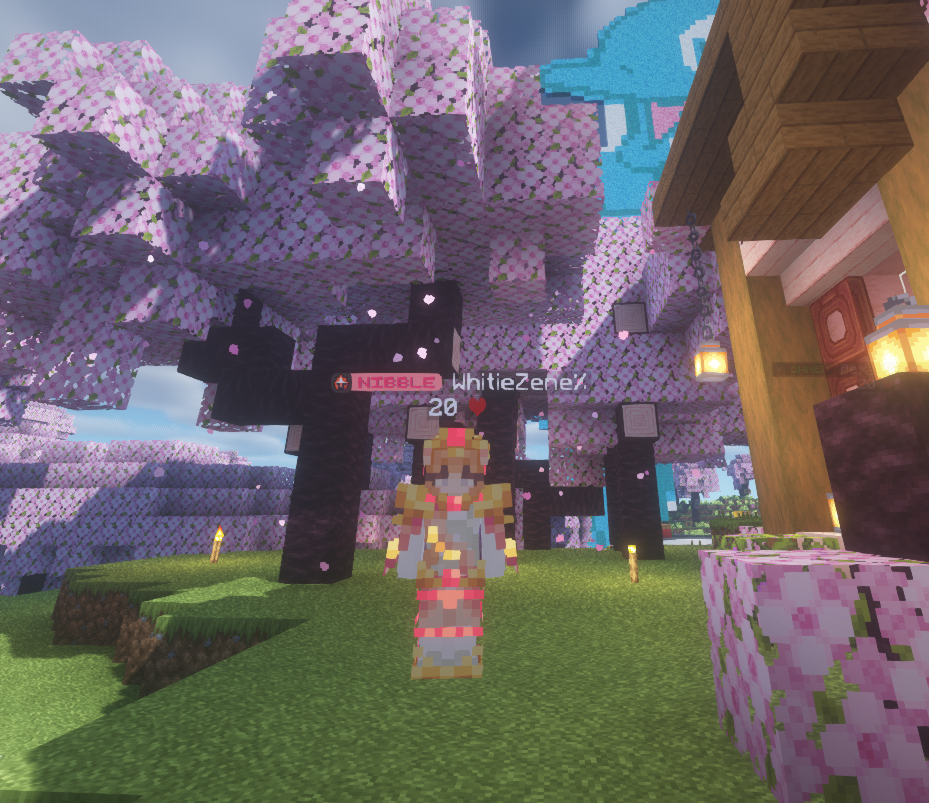

Mis hobbies
Mis pasatiempos favoritos son muy variados, suelo estar haciendo cosas para mantenerme distraida y estos son algunos de ellosaunque van apareciendo nuevos hobbies dedicar tiempo a nuestros hobbies nos proporciona beneficios tanto físicos como mentales. Nos ayudan a reducir el estrés, mejorar nuestra concentración y creatividad, y nos permiten desconectar de las preocupaciones diarias. Además, son una excelente manera de conocer gente nueva y ampliar nuestras habilidades. En resumen, los hobbies son una parte importante de nuestra vida que contribuye positivamente a nuestro bienestar general.
Jugar videojuegos
Minecraftes mi juego favorito ya que este juego es sumergirse en un mundo de infinitas posibilidades y creatividad. Desde construir impresionantes estructuras hasta explorar vastas tierras llenas de misterios y peligros, cada sesión es una aventura única. Ya sea solo o en compañía de amigos, el hobbie de jugar Minecraft ofrece un escape a un universo digital donde la imaginación es el único límite. Además puedes conocer muchas nuevas personasLa libertad para construir, explorar y colaborar en un mundo generado aleatoriamente despierta la inventiva y el ingenio de cada jugador.
Mi top juegos son:
- Minecraft
- Fortnite
- Valorant
- Phasmophobia
- Portal

Bordar
El arte del bordado es más que una simple afición; es una forma de expresión creativa que fusiona habilidad técnica con imaginación. A través de la puntada y el hilo, los bordadores dan vida a diseños y patrones, creando piezas únicas llenas de belleza y detalle. Este pasatiempo no solo ofrece momentos de calma y concentración, sino que también permite explorar la propia creatividad y compartir con otros el placer de crear algo hermoso con las propias manos.El bordado, con sus delicadas puntadas y colores vibrantes, es un pasatiempo que invita a sumergirse en un mundo de creatividad y belleza. Cada puntada es una oportunidad para añadir textura y profundidad a la tela, creando obras que reflejan la imaginación y destreza del bordador. Además de ser una forma de expresión personal, el bordado también es una tradición cultural que ha perdurado a lo largo de los siglos, transmitiendo historias y técnicas de generación en generación. Desde simples diseños hasta elaboradas obras de arte, el bordado ofrece un espacio para la inspiración y la conexión con el pasado.
- Punch needle
- Tradicional
- Pines
- Bordado en aro
- Espejos
 Bordado Punch needle
¿Cómo se hace?
Bordado Punch needle
¿Cómo se hace?
Ver series
Sumérgete en un intrigante laberinto de secretos, suspenso y misterio conPretty Little Liars, donde cada episodio desentraña nuevas capas de misterio mientras las protagonistas luchan por descubrir la verdad oculta detrás de cada engaño. Desde el primer momento, te verás inmerso en un mundo donde la amistad y el miedo se entrelazan en una emocionante trama que te mantendrá al borde del asiento en cada giro inesperado.se convierte en mucho más que una simple serie; se convierte en una obsesión irresistible. Cada personaje tiene su propia historia oscura y cada pista descubierta te acerca un poco más al corazón del enigma. Prepárate para sumergirte en un mundo donde nadie es quien parece ser y cada revelación deja más preguntas sin respuesta, manteniendo tus emociones en constante ebullición hasta el último momento. PLL MI TOP SERIES SON:
- Pretty Little Liars
- La casa de papel
- Good Girls
- Strong Woman
- The Boys